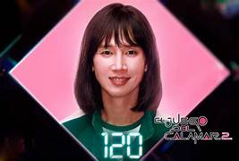
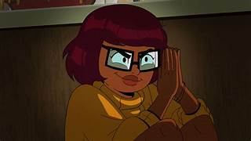

Doris es una de ls hermanastras malvaddas de la saga de sherk que es muy querido por los fans de la pelicuas, doris es un persinaje que exagera en ser gay, pero es mas como un chiste sobre la comidad LGBTIQ+, una de las razones de que sea tan querido es que es un chiste en la misma saga, pero no lo mencionan tanto y no le dan tanta importancia, eso es algo que lo hace ver muy naturar y no sentirse forsado a decir que es gay.
El jugador 120 o Cho guyn-ju de los juegos del calamar es otro personaje de la comunidad LGBTIQ+ que es querido por muchos, como el caso de Doris el jugador 120 no se siente forsado, a lo largo de la serie sus acciones hacen que nos olvidemos que si es gay o no, eso hace que sea mas ntural ya que no te esta acordando a cada rato que es gay
En este caso Velva de la serie velma es odiada por muchas cosas como los rediseño de personajes, su historia y sus chistes. Pero una de la mayores razones de que sea odiada es por que es de la comunidad LGBTIQ, una de las razones que es odiada por ser lesbiana es por que originalmente no lo era incluso teniendo una relacion con shaggy otro personaje querido de Scooby Doo. Otra de las razones es por que se siente forsado a ser lesbiana y su relacion con daphne se siente forsado por la historia
¿que los diferencia estos personajes?
¿por que otros son queridos y otros no? eso depende de varios factores que los pueden hacer querido o no, tales como no sentirse forsado, que no te lo recuerden a cada momento, la personalidad de ese personaje y que eso no estroope la historia de la pelicula o serie. En cuanto cumpla estos requisitos puede que no sea odiado por que aunque haga todo bien, siempre va a aver alguien que no le guste ese personaje por ser de la comunidad LGBTIQ+ sea bueno o no. ¿Pero como seria un personaje LGBTIQ+ que sea bien recibido en el cine?
-
que no sea su personalidad completa: cuando un personaje te recuerda a todo momento que es LGBTIQ+ y no tiene nada mas que lo haga importante, hace que sea facilmente odiado por ser molesto y sin nada importante.
que sea natural: lo mejor para que sea recibido no es que lo digo muchas veces y que no se vea como un esteriotipo de personaje LGBTIQ+ y que no actue tanto como uno, si no vestir normal, hablar normal y tener algo propio que lo repesente adelas de eso.
tener historia: normalmente los personajes LGBTIQ+ en la series y peliculas no tienen historia y lo unico que lo representa es ser de la comunidad LGBTIQ ya que la mayoria solo son para ser exclusivo, pero eso hace que no sea del agrado de muchos.